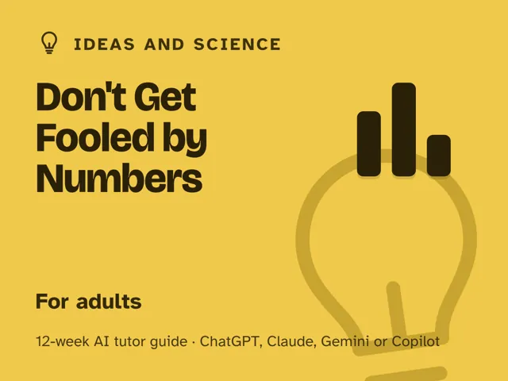

Don't Get Fooled by Numbers
$29Instant download: a PDF to read, a browser copy, and the AI-tutor file you hand straight to any AI assistant.Buy it on Etsy →
Take the free placement check first: 15 minutes, and it names the week to start at.
A masterclass you actually finish, the kind of clear-thinking course you'd expect to pay real money for, self-paced with an AI tutor at your side. This is not a math class. It's twelve weeks of learning to see through the numbers that get used to sell, scare, and spin you. Each week the AI tutor hands you a real-feeling stat, headline, or chart and (Socratically, one question at a time) walks you to what it actually proves and what it's quietly hiding. No math beyond arithmetic. You leave able to interrogate any claim yourself, from a health scare to a poll to a suspicious graph.
Format: a digital guide with 12 ready-to-run, fully scripted weekly sessions. You lead one ~60-minute session each week, with every step timed and written out for you. No statistics background or prior AI experience needed. Think masterclass structure, not a lecture you sit through.
What you get
- 12 deep weekly sessions, each with a plain-language concept, a concrete worked example, a minute-by-minute session plan for your ~60 minutes with the AI-tutor prompts built in, a "show me" checkpoint where you prove you can see the trick yourself, common mistakes to watch for, and practice.
- A "Never used an AI chat assistant? Start here" onboarding that takes a complete beginner from zero to ready in about five minutes. No paid plan needed; free AI assistants are enough.
- Four rescue prompts in the front matter for when a session goes sideways or a concept won't click, so you're never stuck.
- An orientation built on the one rule that makes the course work: the tutor asks before it tells, so you do the noticing yourself and can spot what a number leaves out without the bot.
- Two project weeks and a Demo Day: debunk a real claim end to end, investigate a question of your own, and leave with a short personal checklist for any number.
The 12 weeks
- What a Number Actually Claims
- Averages Lie: Mean, Median & the Spread
- Probability & Why Our Gut Is Terrible at It
- Risk in Real Terms: Relative vs Absolute
- Correlation Is Not Causation
- Sampling & Bias: Who Did They Actually Ask?
- How Studies Mislead, and How to Read One
- Charts That Lie: Spotting Misleading Graphs
- Base Rates: Why Even Good Tests Fool Us
- Project Week I: Debunk a Real Headline or Claim
- Project Week II: Investigate a Question of Your Own
- Demo Day & the Skeptical-but-Fair Mind
Who it's for
Adults who suspect numbers and statistics are used to manipulate them, and are done feeling outmatched by a chart or a scary headline. If you can do basic arithmetic and read the news, you're ready. No formulas to memorize, no math background assumed. Examples come from health, news, sports, weather, and everyday life.
Why this instead of a free chatbot
Ask a raw chatbot to "explain statistics" and it'll cheerfully lecture you into a fog of formulas you'll forget by lunch. This pack ships the structure and method a chatbot won't give you on its own: a real 12-week progression, a tutor set up to question before it tells so YOU do the reasoning, and a consistent set of interrogation questions you can point at any claim. You come out able to see through numbers yourself, not dependent on asking the bot every time.
FAQ
- Do I need to be good at math? No. If you can handle basic arithmetic, you're set. This teaches the questions to ask, not equations to solve: the reasoning that lets you evaluate any claim.
- Is this really a masterclass, or a paid pack? It's an honest paid pack, built and structured like a masterclass: a real curriculum, two project weeks, and a coach. Self-paced, and you actually finish it.
- I've never used an AI chat assistant. Does that matter? No. The guide opens with a "Never used an AI chat assistant? Start here" walkthrough that gets a complete beginner from zero to ready in about five minutes.
- Which AI does it use? Any modern AI assistant: ChatGPT, Claude, Copilot, Gemini. Free versions are enough; no paid plan required. Every session is written out step by step.
- I'm not in the US. Will it work for me? Yes. The guide is written in US English, and every session prompt tells the AI to use your country or region for spelling, units, money, and examples.
- Will it teach me investing or personal finance? No, deliberately. The examples come from health, news, sports, weather, and everyday life, and the tutor is told to steer away from money and investing, so you're learning to reason, not chasing money tips.
- Is it too basic if I already know some stats? The guide includes a "level me up" rescue prompt you can use in any week. It hands you subtler, technically-true-but-misleading versions of the same trick, so it scales with you. The free placement check can also tell you which weeks to compress.
- Refunds? Standard marketplace refund policy applies.
$29Instant download: a PDF to read, a browser copy, and the AI-tutor file you hand straight to any AI assistant.Buy it on Etsy →